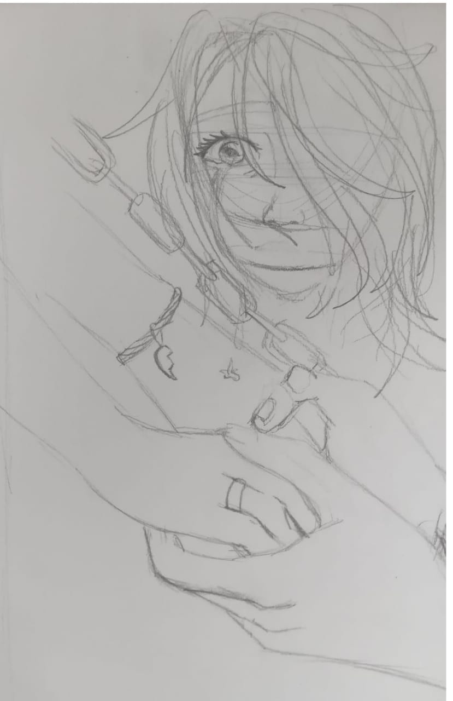
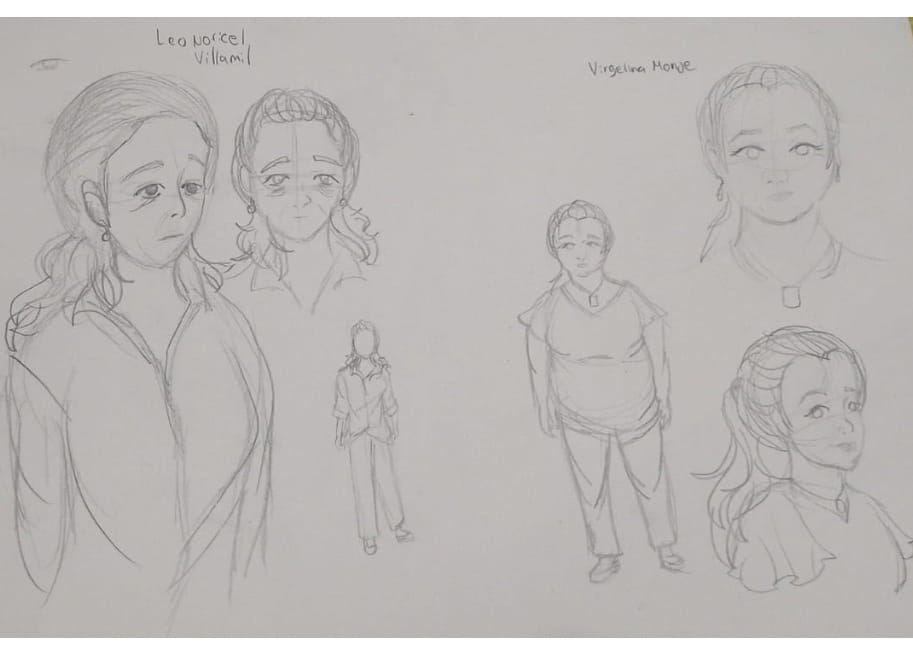
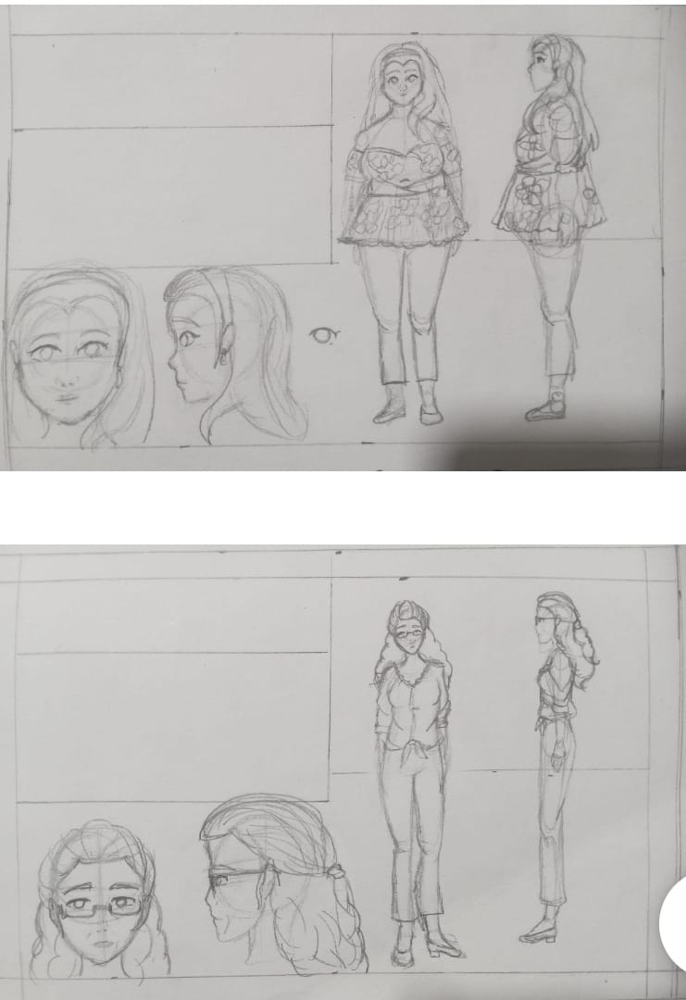

LIBRO DIGITAL
Proyecto (Trazos de Resistencias)
El siguiente libro relata diferentes historias de mujeres y comunidades víctimas de las violencias, desde la libertad que se encuentran galopando en un potrero hasta la oscuridad de una vereda, donde el llanto de un bebe resuena en la memoria de una madre, pasando por el cajón de secretos de guarda las experiencias de mujeres valientes y la desgarradora realidad de perderlo todo por culpa de la violencia, en cada pagina estas historias entrelazadas nos invitan a reflexionar sobre la fuerza de la esperanza, la importancia de la familia y la resiliencia que surge incluso en los momentos más oscuros.


